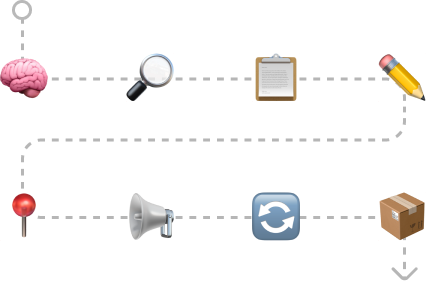
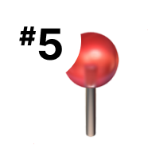
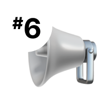
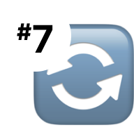

Know what you're doing before you try to do it. This is asking questions. This is experiencing the pain first hand. This is being more aware of the problem than being set on a potential solution. If you still have unanswered questions in your mind about the project, you're likely not ready to start designing. This is really understanding as much as possible about Point A and Point B, and making sure these are actually problems that should be solved in the first place.
Working on a complicated project in terms of feature set OR team size will be waaaay more complex than a very simplified feature set or a very small team. Plan accordingly. A project that is not complex could easily skip to steps #5-#8 depending on the scope. Step 2 in the design process to understand which of the steps are needed.
A complex project that is scoped means the you're developing a feature or updating existing functionality to work within a pre-defined set of technical capabilities or requirements.
Complex projects will need more meetings, more presentations, more people to convince, more documentation, more decisions to make, more designs overall...
Complex projects within a scope, will utilize lists, content maps, and user flows to help guide the project.
An unscoped project, alternatively, requires far more low fidelity wireframing and stakeholder discussions. These kind of projects typically have not solved for any potential direction on the back-end, and need to be "scoped" so that everyone from product to engineering is on the same page.
These projects lean heavily into low fidelity wireframes and focus on functionality first to really nail complex problems OR to sell your ideas to the development team and/or stakeholders. I can't recall a time I've regretted doing this, but there have been plenty of times where I skipped this step and wished I hadn't. You definitely don't want to mix feature conversations and API call conversations with font choices and color conversations. You'll end up designing in circles.
You'll make much more progress as a designer if you diplomatically get everyone agreeing and on the same page with overall flow and feature sets BEFORE you start tweaking corner radii and button colors.
This is where a lot of design fails. Sure the type is OK, the layout is decent, and your colors kind of work. But is the concept AMAZING? Does it feel magical? Are you pumped about it? This is one of the hardest things to accomplish, but once you do, you know it. You also might not get to this level of design enlightenment with tight deadlines, etc. but you're shipping "good enough" work, you should always be thinking about how to make it better. I truly believe this where "jazz it up" and "make it pop" comes from. The client or stakeholder sees a design and knows it doesn't feel right, but can't quite put their finger on why. The best thing to do is keep iterating and experimenting until some magic happens. (easier said than done)
It's tempting to hide away in a cave and emerge with a big magnificent unveiling, but...If you can get small pieces of buy-in along the way—concepts, color schemes, ideas, it'll be easier to "sell" your designs as they get closer to final form. Get a really good idea for what the key stakeholder likes and doesn't like. The user is important, but ignore the stakeholder's preferences at your peril. If you can't figure out what they like, try figuring out what they don't like.
As you're experimenting and iterating, you'll come across little hints of magic. Eg. "Something about THIS color with THAT typeface and THAT background feels great." The quicker you can spot the magical pieces of design, the quicker you can exploit those combinations for the rest of the project.conventions, etc. you can leverage them earlier in the process...but if they're causing you problems during the creative experimentation phase STOP and just focus on making it look good first.
It's not THAT important to start making components for every single little thing and worrying about Figma organization and auto layout and prototypes, etc. when you don't even have a good design yet. It's 10X more satisfying to create a solid system out of phenomenal designs that have gone through the ringer of experimentation and actually FEEL magical... VS stressing out over whether or not you're using the correct component properties in Figma.